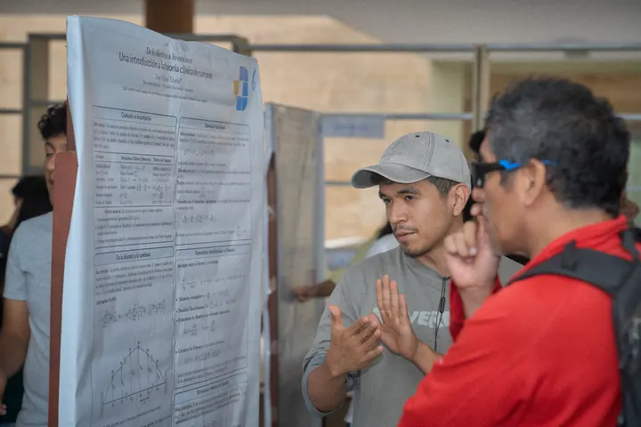
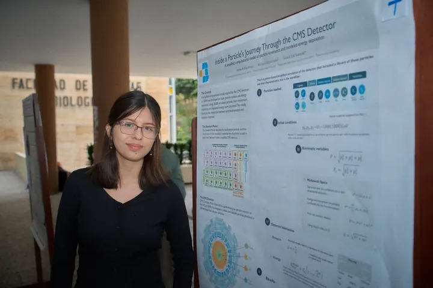
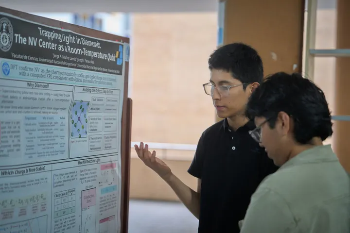
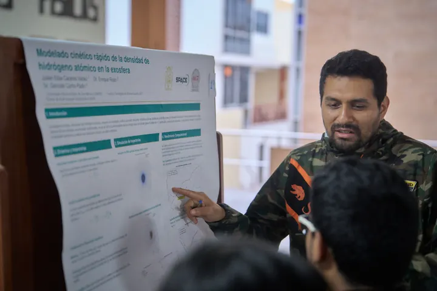
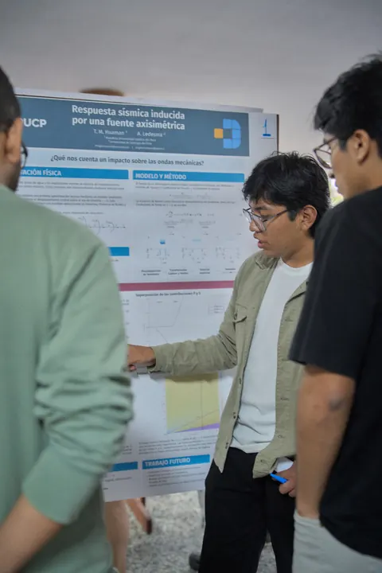
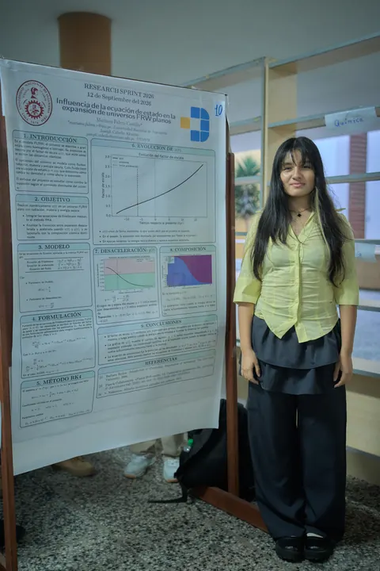

PROYECTO 01

Exosfera terrestre
Mentor: Enrique Rojas VillalbaExplora la exosfera terrestre a través de herramientas de física espacial y métodos numéricos.
2 vacantes6–9 h/semana
Información y requisitos 
Una convocatoria para estudiantes de Física.
Desarrolla un proyecto de investigación con el acompañamiento de un mentor.
Explora los seis proyectos. Cada uno tiene sus propios requisitos, modalidad de trabajo y dedicación.
Explora la exosfera terrestre a través de herramientas de física espacial y métodos numéricos.
Estudia fuentes de luz y su relación con la criptografía cuántica.
Trabaja con herramientas de física teórica aplicadas a sistemas de reacción-difusión.
Explora redes neuronales, inteligencia artificial y desarrollo cerebral.
Estudia la propagación de ondas P y S con herramientas de elasticidad y simulación.
Aborda el problema de Stefan con ecuaciones diferenciales y técnicas de Deep Learning.
Cada ficha reúne la descripción completa, las tareas, los requisitos y el material adicional para postular. Explora los proyectos y elige los que conecten contigo.
Estos seis mentores acompañan los proyectos de Summer Sprint 2027. Conoce sus áreas de investigación.
MIT
Exosfera terrestre
Criptografía cuántica
Universidad Nacional Mayor de San Marcos, Facultad de Ciencias Físicas, Grupo de Física Teórica y Física de Altas Energías
Física teórica
Morphodynamics Neuroscience and Behavior Lab, UNESCO UniTwin Complex Systems Digital Campus
Neurociencia e IA
Universidad de Santiago de Chile, Facultad de Física
Ondas sísmicas
Wolfram Research
Deep Learning y Física
Toda nuestra comunidad de mentores
Información de los mentores según las fichas de esta convocatoria.
Una mirada a Research Sprint 2026 y a la presentación de sus proyectos. Abre cada fotografía para verla completa.






Próximamente compartiremos las experiencias de dos participantes de Research Sprint 2026.
Una experiencia en primera persona.
PróximamenteUna experiencia en primera persona.
PróximamenteElige con calma. Busca un proyecto que conecte con tus intereses y con el tiempo que puedes dedicarle.
Abre la ficha de cada proyecto y conoce su pregunta de investigación, requisitos y dedicación.
Selecciona hasta tres proyectos en el orden en que te gustaría participar.
Prepara los materiales adicionales que soliciten tus proyectos y completa el formulario oficial.
A estudiantes de Física que quieran desarrollar un proyecto de investigación con mentoría. Revisa los requisitos específicos en la ficha de cada proyecto antes de postular.
El programa se desarrolla durante 12 semanas, del 11 de enero al 4 de abril de 2027.
Depende del proyecto. Las fichas contemplan dedicaciones desde 3–5 hasta 10 o más horas por semana. Revisa la ficha que te interesa antes de postular.
Sí. Puedes seleccionar hasta tres proyectos y ordenarlos por preferencia en tu postulación.
La modalidad depende del proyecto. Algunas fichas contemplan reuniones preferentemente presenciales. Consulta la ficha del proyecto para conocer la forma de trabajo de cada mentor.
Cada ficha distingue los conocimientos requeridos y los deseables. Algunos proyectos solicitan materiales adicionales, como un ensayo, un video o una respuesta a una pregunta. Revisa la ficha completa y las indicaciones del formulario.
Escríbenos a derivatesanmarcos@gmail.com. Indica el proyecto que te interesa para que podamos orientarte.
Summer Sprint 2027 · 6 proyectos · 8 vacantes